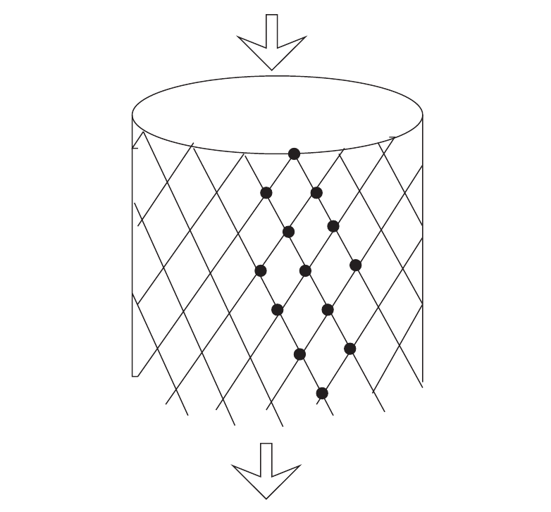

Hello!
These are rolling set of notes primarily for archiving and personal use. They are updated as and when I get time.
These are lecture notes made out of course on Self Organised Criticality at IISER, Pune.
Fractals
"The fractal geometry of nature"-Benoit Mandelbrot
Definition of fractal
A fractal is by definition a set for which the Hausdorff Besicovitch dimension strictly exceeds the topological dimension} \begin{equation*} D>D_{T} \end{equation*}
Effective Dimension
Effective dimension has a subjective basis (dimensions of veil thread ball as studied by physicists). It is a matter of approximation and, therefore of degree of resolution.
Certain ill-defined transitions between zones of well-defined dimension are reinterpreted as being fractal zones within which \( D>D_{T} \)
Spatial Homogeneity, scaling and self similarity
Homogeneous distribution on a line, plane or space has two very desirable properties. It is invariant under displacement, and it is invariant under change of scale.
Fractals
"The fractal geometry of nature"-Benoit Mandelbrot
Definition of fractal
A fractal is by definition a set for which the Hausdorff Besicovitch dimension strictly exceeds the topological dimension} \begin{equation*} D>D_{T} \end{equation*}
Effective Dimension
Effective dimension has a subjective basis (dimensions of veil thread ball as studied by physicists). It is a matter of approximation and, therefore of degree of resolution.
Certain ill-defined transitions between zones of well-defined dimension are reinterpreted as being fractal zones within which \( D>D_{T} \)
Spatial Homogeneity, scaling and self similarity
Homogeneous distribution on a line, plane or space has two very desirable properties. It is invariant under displacement, and it is invariant under change of scale.
Ref: SOC lecture notes; Section-8, Theoretical studies of self-organized criticality(Physica A-2006)
The Directed Abelian Sandpile Model
- Variant of BTW mdel and much more tractable analytically.
- Existence of a preffered direction, particles fall in only one direction(down).
- There can be two knds of pile a conical or tent shaped pile.
Model Description
- Taking square lattice the problem can be described as convention that occupation is only possible at sites such that \( X+Y = even \) or a square lattice oriented in \( (1,1) \) direction.
- Can also be thought of as child playing with wooden blocks on staircase.

- Sand Grains are added anywhere on top edge with equal probability.
- On each toppling, one grain of sand is transferred to each of the two downward neighbors.
- Particles leave the system if there is a toppling at the bottom layer.
- For any site the stable heights are either \( 0 \) or \( 1 \)
We can give the time evolution for the heights as
If \( Z(X,Y) \geq 2 \) then
\begin{cases}
Z(X,Y) \rightarrow Z(X,Y) = 2 \\
Z(X \pm 1, Y \pm 1) \rightarrow Z(X \pm 1, Y \pm 1) + 1
\end{cases}
We want to ask questions such as, What is...
- Steady State
- Avalnche Distribution
- Avalanche Shapes and so on..